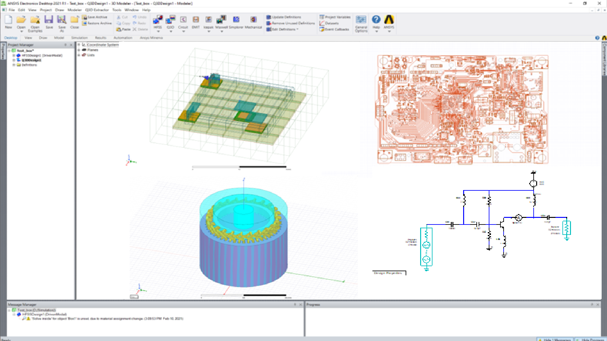

AEDT API#
This section describes PyAEDT core classes, methods, and functions for AEDT apps and modules. Use the search feature or click links to view API documentation. The Ansys Electronics Desktop (AEDT) is a platform that enables true electronics system design. AEDT provides access to the Ansys gold-standard electro-magnetics simulation solutions such as Ansys HFSS, Ansys Maxwell, Ansys Q3D Extractor, Ansys Siwave, and Ansys Icepak using electrical CAD (ECAD) and Mechanical CAD (MCAD) workflows. In addition, it includes direct links to the complete Ansys portfolio of thermal, fluid, and Mechanical solvers for comprehensive multiphysics analysis. Tight integration among these solutions provides unprecedented ease of use for setup and faster resolution of complex simulations for design and optimization.
The PyAEDT API includes classes for apps and modules. You must initialize the PyAEDT app to get access to all modules and methods. Available apps are:
RMXprt
EMIT
Circuit
All other classes and methods are inherited into the app class. The desktop app is implicitly launched in any of the other applications. Before accessing a PyAEDT app, the desktop app has to be launched and initialized. The desktop app can be explicitly or implicitly initialized as shown in the following examples.
Example with Desktop class explicit initialization:
from pyaedt import launch_desktop, Circuit
d = launch_desktop(specified_version="2023.1",
non_graphical=False,
new_desktop_session=True,
close_on_exit=True,
student_version=False):
circuit = Circuit()
...
# Any error here should be caught by the desktop app.
...
d.release_desktop()
Example with Desktop class implicit initialization:
from pyaedt import Circuit
circuit = Circuit(specified_version="2023.1",
non_graphical=False,
new_desktop_session=True,
close_on_exit=True,
student_version=False):
circuit = Circuit()
...
# Any error here should be caught by the desktop app.
...
circuit.release_desktop()
- Application and solvers
- Material and stackup
- 3D modeler
- 2D modeler
- Primitives
- Modeler in HFSS 3D Layout
- Modeler and components Circuit
- Boundary objects
- Mesh operations
- Setup
- Sweep classes
- Postprocessing
- Logger
- Optimetrics
- Variable
- Constants
AXISBasisOrderCATEGORIESQ3DCROSSSECTIONCSMODEFILLETFlipChipOrientationGLOBALCSGRAVITYINFINITE_SPHERE_TYPELineStyleMATRIXOPERATIONSQ2DMATRIXOPERATIONSQ3DNodeTypePLANESEGMENTTYPESETUPSSOLUTIONSSWEEPDRAFTSolverTypeSourceTypeSymbolStyleTraceTypeVIEWcel2kel()db10()db20()dbm()dbw()fah2kel()scale_units()unit_converter()unit_system()validate_enum_class_value()
- Configuration files
- Setup templates
- Cable modeling